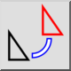
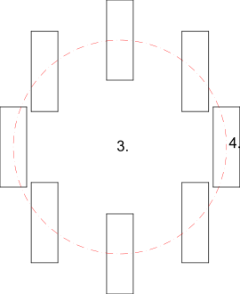

Kétszeres forgatás
Eszköztár / ikon:


Menü: Módosítás > Kétszeres forgatás
Rövidítés: R, 2
Parancsok: rotate2 | r2
Leírás
Elforgatja és ellenforgatja az elemeket. Ez az eszköz hasznos lehet elemek egy középpont körüli elforgatásához úgy, hogy közben megőrzi maguknak az elemeknek az eredeti tájolását.
Használat
- Jelölje ki a forgatni és ellenforgatni kívánt elemeket.
- Indítsa el ezt az eszközt.
- Állítsa be a fő forgatás középpontját az egérrel, vagy adjon meg egy koordinátát a parancssorban.
- Állítsa be az egyes objektumok forgatásának középpontját. Ez a második forgatási középpont az elemekkel együtt forog az első középpont körül.
- Megjelenik a kettős forgatás párbeszédablak, ahol megadhatja a forgatási szöget és az ellenforgatási szöget. Az eredeti elemek törléséhez jelölje be az „Eredeti törlése” lehetőséget, másolásukhoz válassza az „Eredeti megtartása” lehetőséget. Tetszőleges számú másolatot is létrehozhat a „Több másolat” kiválasztásával. Az új elemek ugyanarra a rétegre kerülnek, mint az eredetiek, és ugyanazokkal a tulajdonságokkal rendelkeznek. Ehelyett az aktuális réteg és aktuális tulajdonságok használatához jelölje be az „Aktuális réteg és tulajdonságok használata” lehetőséget.
- Kattintson az „OK” gombra az elemek elforgatásához.
